pro futuro
Identidade visual de Sabina Deweik — futurista, caçadora de tendências, palestrante SXSW & Web Summit. Rastrear, ler e digerir o futuro.
O que a marca sente
Clara, sofisticada e humana. A base é creme e arejada; a cor entra em acentos quentes (âmbar, terracota) com o verde como âncora. A fotografia é sempre preto e branco editorial. O asterisco ✳ é a assinatura — o ponto que marca uma tendência no radar.
Não existe o futuro. Existem futuros — e eu ajudo a lê-los.
Paleta oficial
Base clara; hues cheios em blocos/botões/ícones; para texto pequeno sobre creme, usar as versões ink.
fundo (dominante)
cards/superfície
texto
Três vozes
Como fala
Prospectiva, investigativa e humanista. Traduz o complexo (futuro, comportamento) em algo acessível e acolhedor.
FAZER
- Frases diretas, com autoridade calma.
- Futuro como oportunidade humana, não hype.
- Dados/tendências traduzidos em sentido.
- Muito respiro; a palavra-assinatura em serif itálico.
EVITAR
- Fundos escuros pesados; preferir claro/arejado.
- Tom saturado/"pop" gritante.
- Promessas mágicas sem lastro de pesquisa.
- Mais de 3 blocos de cor por seção.
Chamadas
Pílula (radius 99px). Primário = âmbar (o CTA da marca). Secundário = verde. Fantasma = contorno preto.
Blocos
Me Leva pro Futuro
Tendências, inovação e humanização em uma leitura acessível do que vem aí.
palestras e capacitações realizadas
Cards em branco sobre creme, sombra quente. Badge no azul (info). Section labels com prefixo _.
Grafismos da marca
Formas da agência — asterisco, sol, meia-lua, mola e variações. Silhuetas recoloríveis (aqui em preto) para usar em qualquer cor da paleta. Fonte editável: FORMAS.ai (Drive); rasters coloridos em *@2x.png.
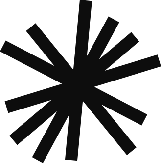
asterisco 1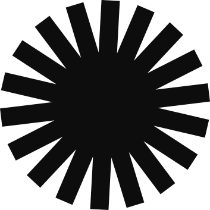
asterisco 2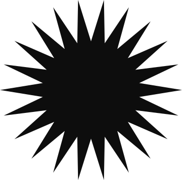
sol 1 sol 2
sol 2 meia-lua
meia-lua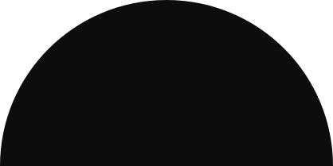
meia-lua 2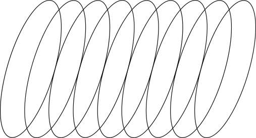
mola mola 2
mola 2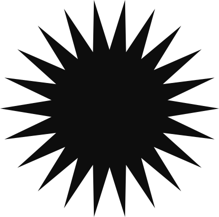
ativo 2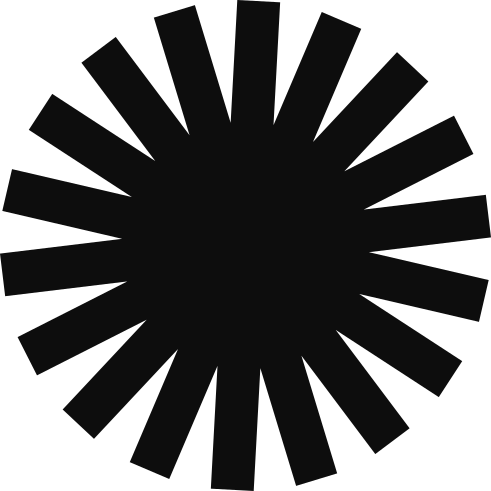
ativo 3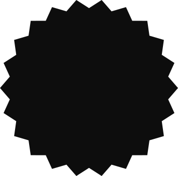
ativo 7Preto e branco editorial
A cor vive nos gráficos; a foto é sempre P&B de alto contraste. Retratos de palco (movimento, autoridade) + imagens conceituais (natureza que emerge do concreto = futuro/resiliência), sobre texturas de papel/concreto.
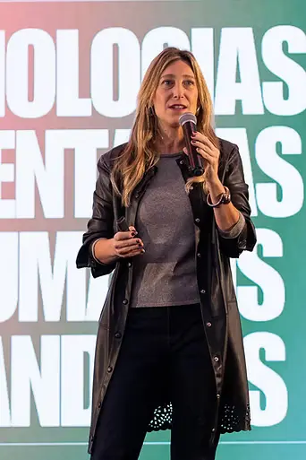
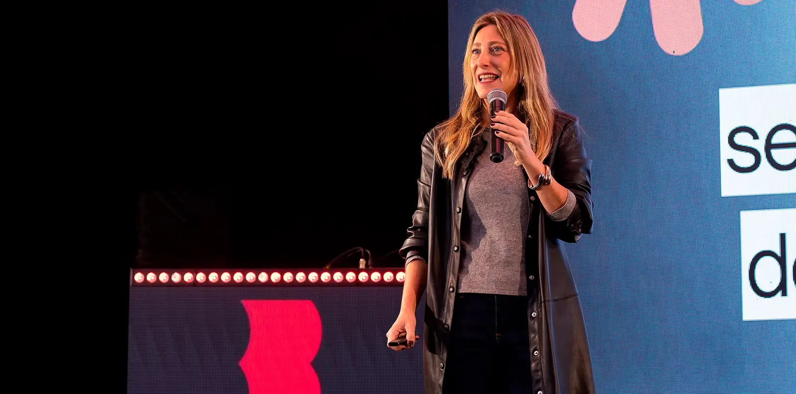
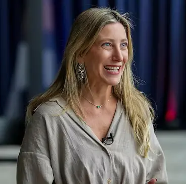
Onde vive
Este sistema é o portão: LP, linktree, funis e criativos consomem estes tokens (sistema/tokens/) — nunca cores fora da paleta. Os nomes técnicos antigos --pop-* foram aliasados para esta paleta, então nada quebra ao migrar.